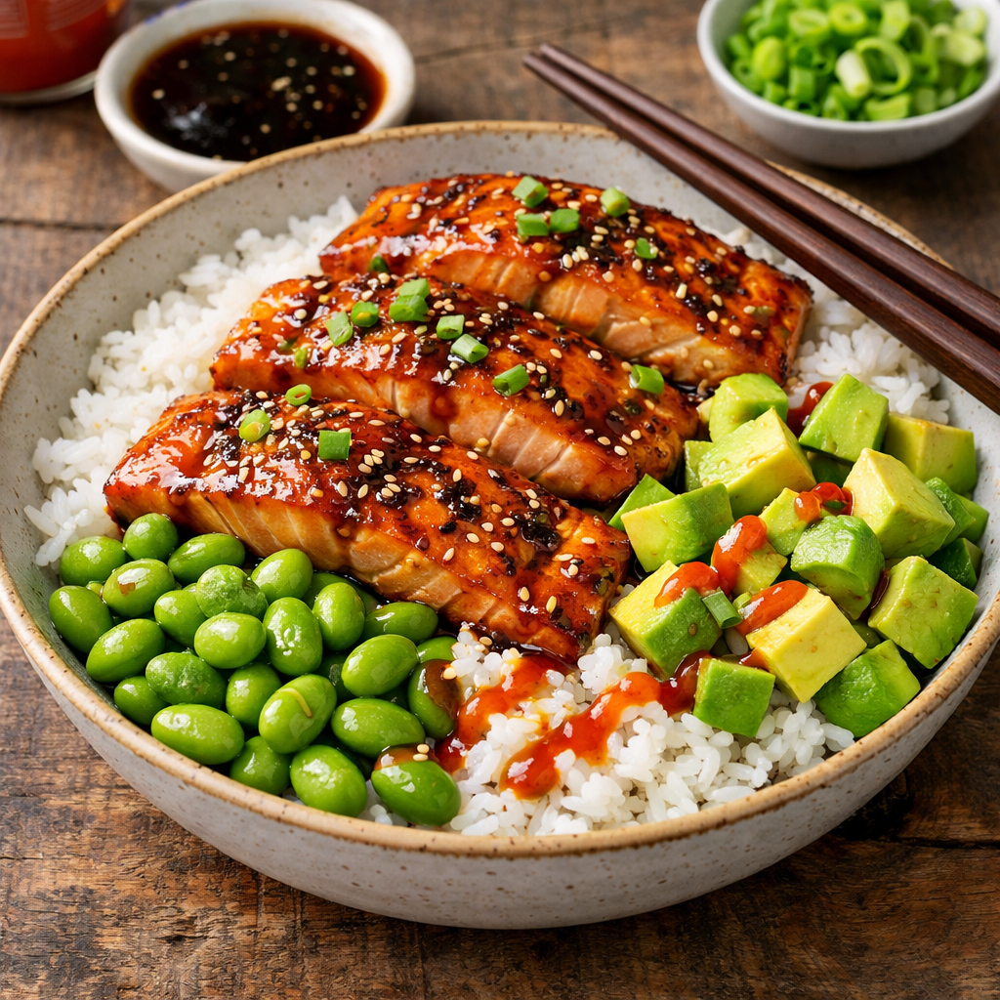

Teriyaki bowl recipe

Description
Easy and delicious 5 ingredient salmon teriyaki bowl
Ingredients
- 4 salmon filets
- 1/2 tsp salt
- 1/2 cup teriyak sauce
- 3 cups jasmine rice
- sriracha sauce(optional)
- 2 cups of shelled edamame
- 1 avocado, peeled and diced
Steps
- Preheat the oven to 235 degrees celsius and line a rimmed baking sheet
with foil and lightly grease the pan
- Season the salmon with salt and pepper and spread 1 tablespoon teriyaki sauce
over each fillet. Set salmon on the prepared baking sheet.
- Bake in the preaheated oven until salmon flakes easily with a fork.
This is usually between 10 to 12 minuted depending on the thickness of the salmon.
- Meanwhile prepare the rice and edamame according to the package. Keep it warm.
- Divide the rice among bowls and top with the edamame
Flake 1 piece of salmon on top and add the avocado.
- Drizzle 1 to 2 tablespoons of the remaining teriyaki sauce over each bowl and
drizzle with sriracha sauce.
Home